and Frequencies!
SYDE 671 · Assignment 2 · James Xie
PART 2.1:
IMAGE
SHARPENING
Subtract the low frequencies, amplify the remaining detail, and add it back. Edges look crisper, but contrast enhancement cannot recreate all the information lost to blur.
01 / The unsharp mask
A Gaussian filter is a low-pass filter: it keeps broad intensity variations and suppresses rapid changes. Subtracting this blurred image from the original isolates a high-frequency residual. Adding a scaled residual increases local edge contrast.
B = G * I · H = I − B
S = I + αH = (1 + α)I − α(G * I)
K = (1 + α)δ − αG ⇒ S = K * I
δ is an impulse kernel with one at its center and zero elsewhere. The combined kernel K is applied with one spatial convolution per RGB channel, so no color channels are mixed. Both implementations use symmetric boundaries and preserve image dimensions. The Gaussian construction reuses Part 1.3: an outer product of a normalized OpenCV Gaussian column with radius ceil(3σ). Here σ = 1.5 and the kernel is 11 × 11.
At α = 0 the output is the original. Increasing α boosts the high-frequency residual more strongly. The kernel sums to one within floating-point precision, preserving constant colors. Computation uses float64 encoded RGB values normalized to [0, 1], without gamma linearization. PNG output alone clips values to [0, 1] and rounds to uint8. All implementation comparisons use unclipped floating-point arrays.
Implementation and single-kernel construction
def filter_image(image, kernel):
"""One spatial convolution per channel; symmetric extension, same size."""
image = np.asarray(image, dtype=np.float64)
if image.ndim not in (2, 3) or not image.size or not np.isfinite(image).all():
raise ValueError('Expected a nonempty finite grayscale or RGB array.')
if image.ndim == 3 and image.shape[2] != 3:
raise ValueError('Color images must have three RGB channels.')
if image.ndim == 2:
return convolve2d(image, kernel, mode='same', boundary='symm')
return np.stack([convolve2d(image[:, :, c], kernel, mode='same', boundary='symm')
for c in range(3)], axis=-1)
def unsharp_mask(image, sigma, alpha):
if not np.isfinite(alpha) or alpha < 0:
raise ValueError('Sharpening amount must be finite and nonnegative.')
image = np.asarray(image, dtype=np.float64)
gaussian = gaussian_kernel(sigma)
blurred = filter_image(image, gaussian)
high = image - blurred
sharpened = image + alpha * high
impulse = np.zeros_like(gaussian)
impulse[gaussian.shape[0] // 2, gaussian.shape[1] // 2] = 1.
kernel = (1 + alpha) * impulse - alpha * gaussian
single = filter_image(image, kernel)
return {'gaussian': gaussian, 'blurred': blurred, 'high': high,
'sharpened': sharpened, 'kernel': kernel, 'single': single}
02 / Two images, five sharpening amounts
Signed high-frequency panels use middle gray for zero and a shared scale of ±0.25 per channel. Positive residuals appear brighter and negative residuals darker; large residuals can clip in the visualization. The saved raw arrays retain the actual signed values. Original, blurred and sharpened photographs use ordinary RGB display values, without independent contrast normalization.
The Taj Mahal

The original file is 300 × 300 pixels; the working image is 300 × 300. Every variant uses the same RGB input and Gaussian σ = 1.5. The four panels show the full unsharp-mask construction.
Varying the sharpening amount
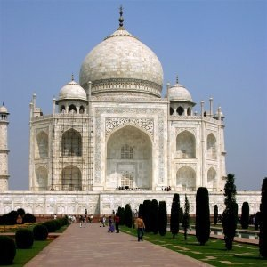


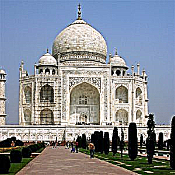
The same detail region, enlarged 2×
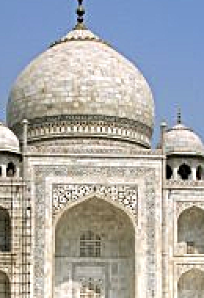
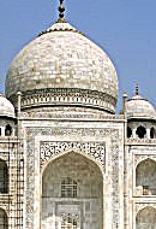
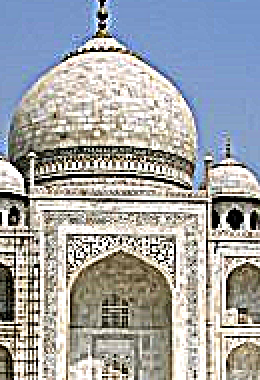
Every crop uses the same rectangle and nearest-neighbor enlargement, so resampling does not create different detail between variants. Across these amounts, the maximum full-image discrepancy between the two implementations is 3.553e-15 before clipping.
An additional image: my selfie


The original file is 1279 × 1706 pixels; the working image is 480 × 640. Every variant uses the same RGB input and Gaussian σ = 1.5. The four panels show the full unsharp-mask construction.
Varying the sharpening amount

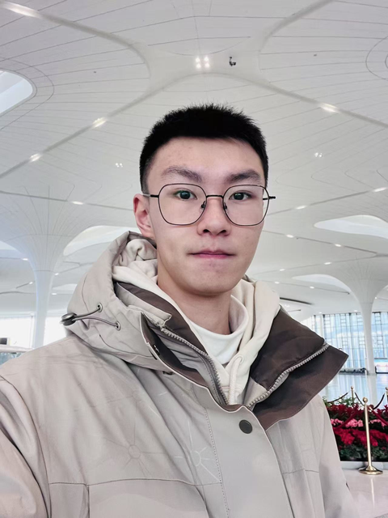

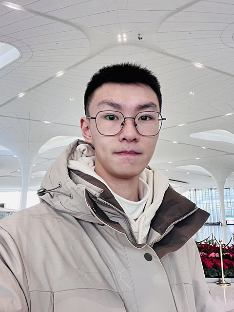


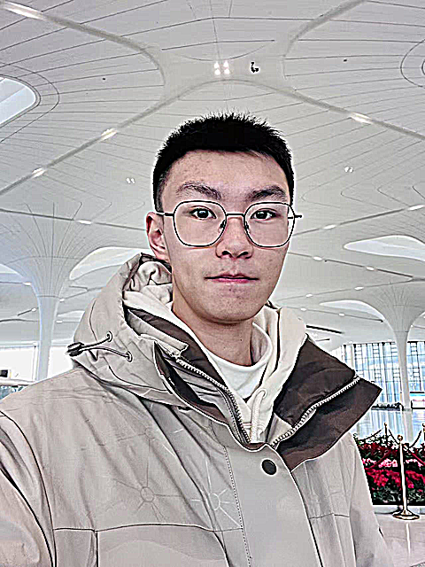
The same detail region, enlarged 2×

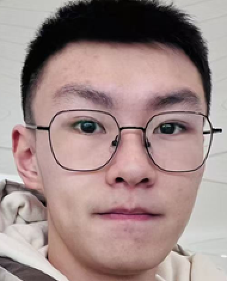

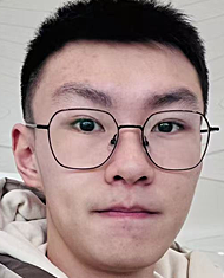

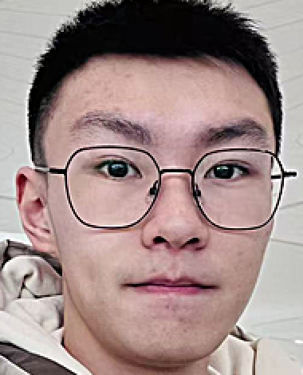


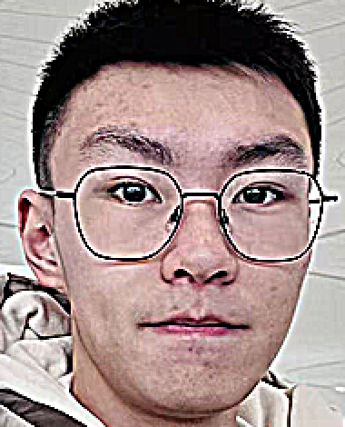
Every crop uses the same rectangle and nearest-neighbor enlargement, so resampling does not create different detail between variants. Across these amounts, the maximum full-image discrepancy between the two implementations is 3.997e-15 before clipping.
Visual observations
For Taj Mahal, alpha = 0.5 and 1 make the marble pattern, dome boundary and arch detail easier to distinguish. Alpha = 2 gives a stronger, harsher contrast, and alpha = 4 produces conspicuous bright/dark fringes around the dome and minarets and exaggerates the building texture. I use alpha = 1 as a moderate demonstration, not as a universal optimum. On the selfie, the same increase makes the glasses and hair boundary crisper, but also exaggerates skin texture and the existing image artifacts. The alpha = 4 portrait looks visibly harsh, with pronounced outlines around the glasses and face. The high-frequency residual is therefore not pure useful detail: sharpening boosts both real transitions and unwanted texture. In the controlled blur experiment, resharpening improves the contrast around the glasses and mouth, but the enlarged crop still lacks the original's fine hair and facial detail. A higher PSNR than the blurred input does not mean the original image has been recovered.
03 / Can sharpening undo blur?
I use the resized selfie as the sharp reference for this controlled experiment. It is first blurred with Gaussian σ = 2, then sharpened with σ = 1.5. This reference is the original digital image used here, not a claim that the photograph is optically perfect. There is no added noise. The following result uses α = 2.


Identical detail crops


The blurred input has MSE 0.00212659 and PSNR 26.723 dB relative to the reference. The α = 2 result has MSE 0.00144351 and PSNR 28.406 dB. These metrics compare float RGB values after clipping but before 8-bit PNG quantization. Lower MSE and higher PSNR mean closer pixel agreement in this artificial-blur experiment, not universally better perceptual quality.
| Amount α | MSE | PSNR (dB) | Outside range |
|---|---|---|---|
| 0 | 0.00212659 | 26.723 | 0.00% |
| 0.5 | 0.00190475 | 27.202 | 0.00% |
| 1 | 0.00171698 | 27.652 | 0.00% |
| 2 | 0.00144351 | 28.406 | 0.03% |
| 4 | 0.00129481 | 28.878 | 0.43% |
The α = 0 row is the blurred image without sharpening. The final column counts scalar RGB channel samples outside [0, 1] before clipping, not whole pixels. Raw, unclipped MSE is also saved in the measurement file. α = 2 is shown for visual comparison; the table reports all tested amounts rather than claiming a universal optimum.
Contrast around the glasses and mouth improves compared with the blurred image, but fine hair and facial detail remain much softer than the original reference. The process is not an exact inverse Gaussian filter. At extremely high frequencies, the blur has strongly attenuated the reference signal; multiplying the remaining residual by a finite amount cannot fully recover it. Stronger sharpening can also amplify noise, JPEG artifacts and halos. The original and resharpened crops should therefore be compared for actual fine detail, not just apparent crispness.
Verification and reproducibility
Six real-array unit tests cover RGB equivalence including boundaries, zero sharpening amount, preservation of constant colors without channel mixing, signed residuals and unclipped overshoot, unit kernel sum and invalid parameters. The experiment checks the two implementations for every amount on both natural images and on the artificially blurred selfie.
Taj Mahal is the supplied course image. The additional photo is my selfie, reused from Part 1.1; its working copy is resized proportionally to width 480 with Lanczos resampling before any experiment. Input hashes, dimensions, all sharpening amounts, clipping fractions and restoration metrics are recorded.
Algorithm source · Experiment source · Unit tests · Measurements · Raw arrays · Input source record
What I learned
Sharpening changes local contrast rather than restoring a complete scene signal. The useful amount depends on image content: a setting that makes architectural detail clearer can overemphasize skin texture and compression artifacts. Keeping signed, unclipped intermediate arrays separate from display images makes both the mathematics and these limitations visible.
Python 3.14.3 · NumPy 2.4.2 · SciPy 1.17.0 · OpenCV 4.13.0 · Pillow 12.1.0